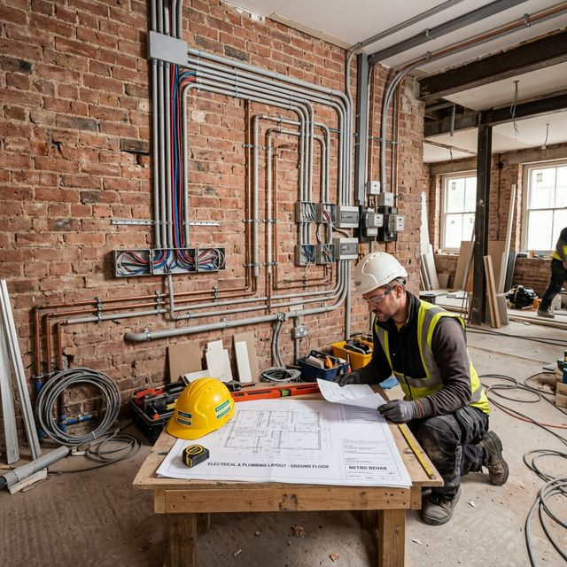

Checklist Proprieatr: Pregătirea Casei Înainte de Sosirea Echipei

Articol de Nico Ticu
Expert în Construcții • 27 Martie 2026
Înainte să începem tencuiala sau șapa, succesul operațiunii depinde mult de cum este pregătit terenul. Iată un scurt ghid pentru proprietari, pe care îl folosim cu succes la Ticu Construct pentru a asigura o lucrare fără sincope.
1. Rețeaua electrică și sanitară finalizată
Toate cablurile, tuburile flexibile și țevile trebuie să fie fixate în carote și pe pereți. Tencuiala va acoperi totul, deci asigură-te că niciun cablu nu "vibrează" liber.
2. Curățenia generală
Știu că e șantier, dar podeaua trebuie măturată pentru a asigura aderența șapei sau tencuielii la nivelul solului și pardoselilor radiante.
3. Utilități pe poziții
- Apa: Avem nevoie de o sursă de apă constantă pentru tencuiala mecanizată.
- Curentul Electric: Utilajele noastre au nevoie de tensiune stabilă (preferabil 380V dacă este tencuială industrială sau trifazată, dar avem soluții și pentru 220V).
Este mai ușor să pregătești totul din timp decât să improvizăm pe loc. Noi ne ocupăm de greul lucrării, tu ocupă-te de bază!
Ești gata pentru finisaje?
Ai bifat toate etapele? Sună-ne să programăm începerea lucrării de tencuit.
Sunt Gata